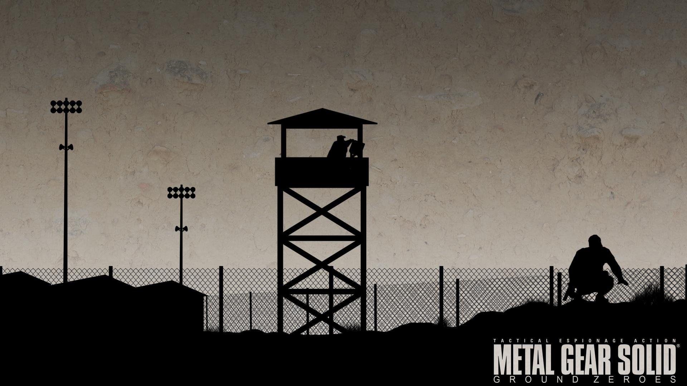

Безусловно важная часть серии Metal Gear, которая происходит сразу после событий Peace Walker. Данная игра вышла перед The Phantom Pain как некий тизер, поэтому не ожидайте тут длинной кампании. Здесь всего 1 основная миссия примерно на 90 минут, но они того стоят (зависит от того, как вы будете проходить). Завершив основную миссию стоит пройти все побочные, так как они откроют Вам новых рекрутов на Вашу базу в The Phantom Pain.
Игра доступна на платформах текущего поколения.